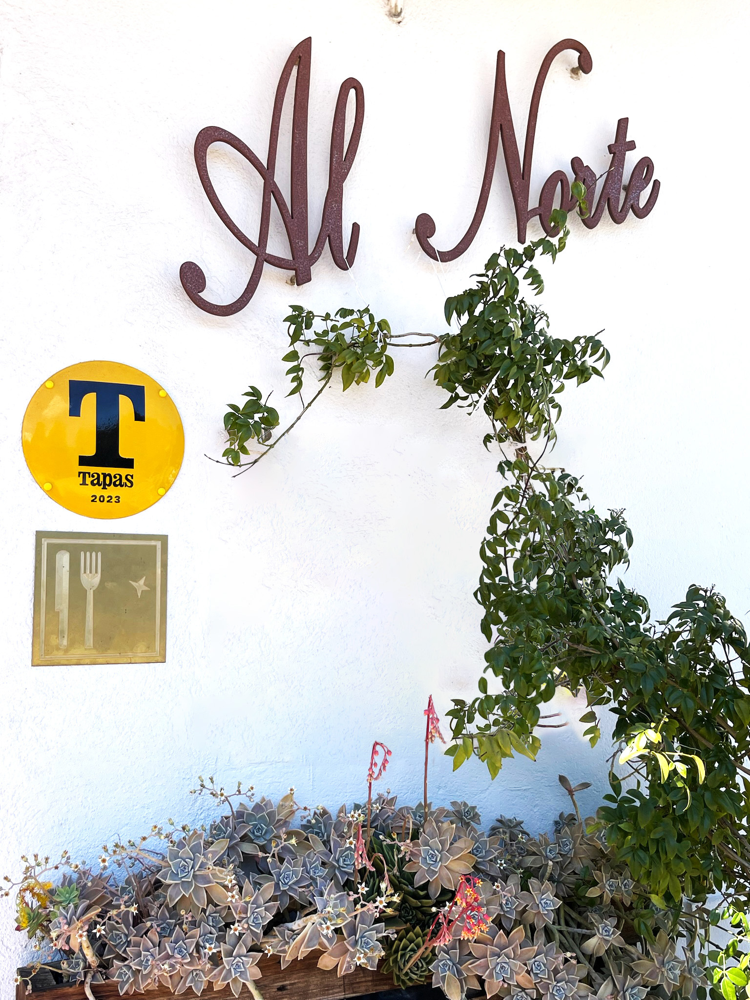
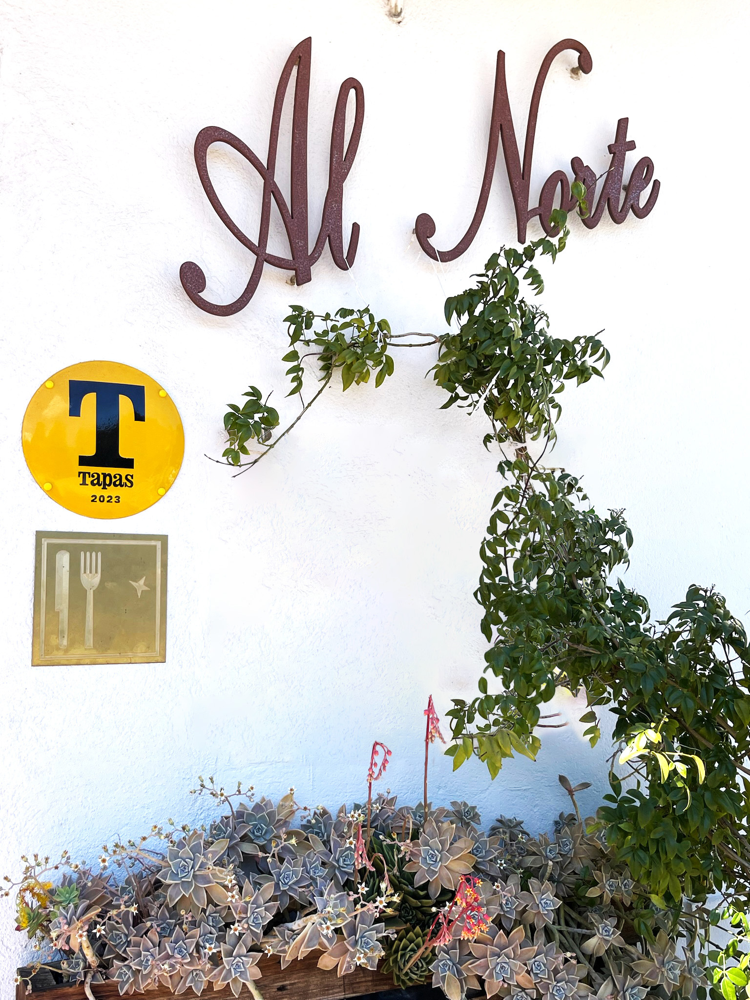

Nuestro origen
¡Hola! Me presento, soy Ruth, la propietaria de Al Norte. A través de mis viajes importo sabores y técnicas de los países que visito, enriqueciendo constantemente nuestro repertorio y abriendo nuestras mentes y paladares a nuevas sensaciones. Mi maravilloso equipo formado por -NOMBRES- aporta su pasión y trayectoria para crear una experiencia única en la cocina.
Nuestra cocina es un espacio abierto, un lugar donde la creatividad y el amor por lo que hacemos se fusionan. Para nosotros, la cocina es una forma de decir "te quiero".
Amamos nuestro trabajo, nuestra cocina y, sobre todo, a nuestros clientes. Es nuestra manera de cuidarles, de hacerles disfrutar y de transmitirles todo nuestro cariño a través de cada plato.
Nuestra filosofía se basa en el slow food, en disfrutar cada momento, en vivir despacio para saborear cada detalle.

 
